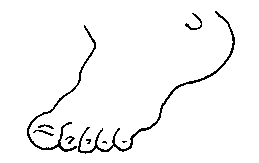

San Antonio, Texas, USA
Lé 2 d'juilet, 1983
 LA NEUF CHENTCHIÈME LETTRE DU BOUANHOMME GEORGE |
Mes quâsi nénante-deux ans m'font penser au vièr diton tchi nouos dit "I' s'garde les pids cauds à ch't heu" pour dithe qu' eune pèrsonne est ancienne. V'là tchi m'ramémouaithe tch'i' y'a un tas d'ditons entouôrre les pids dans nouot' expressive vielle langue.
Quand j'tais mousse, i' n'y'avait qué deux ou trais motos dans l'Île et nou-s-allait à pid partout sénon en Ville, quand nou y' allait dans la beusse au Sieur Harry L'Boutilyi tchi d'meuthait dans La Rue des Palliéthes. En marchant ichîn et là, si nou marchait vite nou disait: "I' s'n'allait à pid couothant."
Quand un homme s'entêtait dans s'n opinnion, nou disait: "Il a mins san pid bas." Quand eune femme m'ttait des souliers atout des hauts talons, nou disait: "Ou marche sus l'but d'ses pids."
Quand la vendue d'eune cliosée d'patates ou d'fouôrrage sé faîsait sus les lieux, nou disait: "Ch'est eune vendue sus pid."
Quand la bouannefemme 'tait mârrie à san bouanhomme, et qu' ou piêtinnait en gronnant, nou disait: "Ou tapait du pid."
Mais quand il avait un jour dé congi et voulait lî' aidgi à tripoter dans la maîson, ou disait: "Bah! Il est tréjous souos les pids." Et s'ou lî donnait eune commission à faithe, ou d'la boutiqu'sie, et qu' oulle avait peux tch'il oubliyîsse tchiquechose, ou lî disait: "Né l'met pon souos tes pids", ou "Né l'met pon en ouothelle d'âne. Fai eune liste sus un mio d'papi."
Pour affirmer, ou mett' du paids driéthe eune opinnion tchelconque, nou dit: "I' faut s'mâter sus ses pids d'drièthe." Quand un homme craûle en marchant comme s'il avait bu, nou dit; "Il a les pids ronds, ch'tî-là!" Ch'est p't-êt' viant qu' eune poule a les pids ronds, et qu' un homme êbédé craûle comme lyi en marchant qu' nou l'dit. Lé cannard a les pids pliats, et y'a d's hommes tchi l's ont pliats étout. J'en ai connu tch'ont 'té r'fûsés pour lé sèrvice militaithe viyant tch'i' l's avaient pliats.
 Lé temps pâssé i' n'fallait pon "donner du pid" innutilement au domestique car v'là tchi l'gâtait. L's anciens disaient: "S'ou lî donnez un pid, il en prendra quatre." Et i' faîsaient sèrvi l'mot pour faithe à connaître la condition d'un acat, ou d'un bail et vente ou aut' transaction comme, disons, "Un louage sus l'pid d'eune sémaine d'avèrtissement" ou "Sus l'pid d'un louis la s'maine."
Quand un homme avait tchique tâche dans l'idée, mais tch'i' n'savait pon trop bein comment s'y prendre, nou disait: "I' n'sait pon sus tchi pid danser." Et nou l'disait, étout, pour tchitch'un tch'avait du travas par sus l's ièrs. Et pour iun tch'était prêssi et tch'avait hardi à faithe, nou disait: "I' n'faut pon tch'il ait deux pids dans un soulier." Et "fouoilli souos les pids à tchitch'un" voulait dithe tch'i' y'avait un problème à r'soudre auve un îndividu tch'était catouoilleux. D'un homme stabl'ye et d'bouanne condite, sus tchi qu' nou pouvait s'fier, l's anciens disaient: "Il a du pid sus sémême, ch'tì-là. Il est raîsonnabl'ye, mais i' n'faut pon lî piler sus les pids ou sus l's ortés."
Pour lé pouôrre dgiâtre d'fèrmyi tchi pâssait ses nyits au vrai, nou disait: "Il a 'té sus pid toute la niet." Si tchitch'un vouos d'mande tchiquechose, et qu' nou n'peut pon l'rêpondre întelligemment sans connaîssance dé cause, nou dit: "I' m'a prîns au pid levé." Quand eune pèrsonne est mâtée ou assise tout près d'vous, ou pouvez dithe: "Oulle est tout au pid d'mé," Et l'creux des reins est appelé "Lé pid du dos."
"Marchi sus l'pid d'ses cauches" veurt dithe marchi sans bottes ou souliers. Eune chose tchi m'întérêsse est qué la bourse dé nouos anciens 'tait eune vielle cauche qué nou-s-appelait "Lé vièr pid d'cauche" dans tchi tch'i' m'ttaient les sou d'êpaingne, atchumulés un mio à la fais duthant l'année, pour payi l'rât ou l'compte împrévu du docteu. Ch'tait sus l'haut d'la couochette qué Manman L'Feuvre gardait la nouôtre.
Pour en finni, quand un homme 'tait mouothant, nou disait: "I' n'en sortitha qu' les pids l'avant." Et quand nou m'ttait l'corps dans l'églyise ch'tait les pids vèrs l'autel, "reposoir du Saint Sacrement," pour quand veindra la Résurrection i' sé r'lév'tha sus ses pids en fache dé l'autel.
Mais pâlons des vivants, j'vouos souhaite à tous bouân pid, bouân' yi, bouanne dent, et l'Paradis à la fin d'vouos jours! 
Bibliographie: L'Dictionnaithe Jersiais-Français du Docteu F. Le Maistre, OBE.
Viyiz étout: